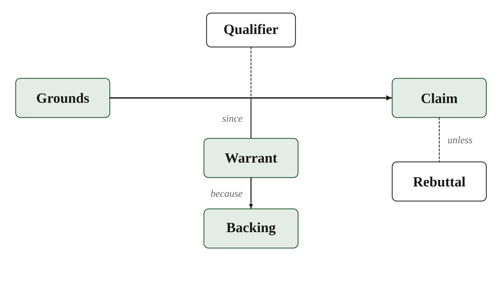

Chapter 2: What Is an Argument?
In this chapter
Move: Build. Builds on: Chapter 1. Where you use it: every claim you make in a debate, and every claim you answer.
Objectives
By the end of this chapter you should be able to:
- Name the four qualities every good argument has.
- Break an argument into the six parts of Toulmin's model.
- Find the unstated warrant in an everyday argument.
- Explain how the narrative paradigm judges arguments differently from Toulmin's model.
- Recognize the two structures debaters use most: the Contention Model and the Uniqueness Model.
Key terms
Argument, claim, warrant, implication, grounds, backing, qualifier, rebuttal, enthymeme, narrative paradigm, narrative coherence, narrative fidelity, Contention Model, Uniqueness Model.
The idea
2.1 What counts as an argument
In everyday speech, "argument" means a fight. In this class it means something narrower: an argument is a reason or set of reasons given to persuade others that an action or idea is right or wrong.
That definition rules out a lot. "Pineapple on pizza is gross" is an opinion, not an argument, because it gives no reason. "Pineapple on pizza is gross because sweet fruit clashes with salty cheese" is an argument, even if it is a weak one.
Every good argument has four qualities:
- A claim: the statement you want the audience to accept.
- A warrant: the reasoning or evidence that supports the claim.
- An implication: why the claim matters, the "so what."
- It is true. An argument can be well built and still fail because its claim or evidence is false.
Students often skip the implication. "Zoos shorten animals' lives" has a claim and could have a warrant, but until you say why a shorter life matters to the decision being made, the judge has nothing to do with it. Chapter 6 turns these four qualities into the structure you will use in your first debate.
2.2 Toulmin's model
The philosopher Stephen Toulmin noticed that real arguments, the kind people make in courtrooms and newspapers, do not look like the syllogisms in a logic textbook. In The Uses of Argument (1958), he proposed a model with six parts. Three are present in nearly every argument, and three more appear when an argument is more careful. Toulmin's model also splits the "warrant" from Section 2.1 in two. There, warrant meant all the support for a claim. Toulmin separates the evidence itself (the grounds) from the reasoning that connects it to the claim (the warrant), because arguments usually break at that connection.
To see all six parts, we will build one argument a piece at a time. You are in your backyard at night and you hear barking and howling somewhere down the street.

The claim is the conclusion you want your audience to accept. Here, the claim is "there are dogs nearby." The claim is the part of an argument people notice first, and the part beginning debaters most often mistake for the whole argument. On its own, a claim is only an assertion: it tells the judge what to think without giving a reason to think it. In a debate, the claim usually appears as the tag that introduces an argument.
The grounds are the evidence or facts offered in support of the claim. Toulmin called them "data." Your grounds are what you heard: barking and howling. Grounds answer the question "what have you got?" In a debate, grounds are often a piece of evidence, such as a statistic, a study or an expert's statement, but they can also be an example, a fact both sides accept, or something your opponent said. Arguments are rarely won or lost on grounds, because it is hard to deny that a study says what it says.
The warrant is the connection that explains why the grounds support the claim. Your warrant is "dogs bark and howl." Warrants answer the question "how do you get from there to here?" They are the most important part of the model, for two reasons. First, they are usually unstated: people say "I hear barking, so there are dogs" and leave the listener to supply the bridge. Second, because they are unstated, they are where arguments are weakest. Opponents rarely attack your grounds. They attack your warrant: "the study is about adults, and this resolution is about teenagers." When you build an argument, say your warrant out loud. When you answer one, look for the warrant your opponent skipped.
Backing is support for the warrant itself, for when the audience doubts the connection. Someone might point out that plenty of animals make noise at night. Your backing is "few other animals in a suburban neighborhood bark and howl like that." Backing is a second layer of proof, and not every argument needs it. You need it when the warrant is what the debate is about. If your opponent says the study about adults does not apply to teenagers, your backing is the reason it does.
A qualifier is a word or phrase that marks how strong the claim is, such as "probably," "in most cases" or "almost certainly." Your honest qualifier is "probably," since you have not actually seen a dog. Qualifiers can feel like weakness, but in a debate they are armor. A debater who claims something "always" happens can be beaten with a single counterexample. A debater who claims it "usually" happens can only be beaten with evidence that it usually does not, which is much harder to find.
The rebuttal is the set of conditions under which the claim would not hold. Some textbooks call it the reservation. Your rebuttal is "unless someone is playing a recording, or there are coyotes in the hills." Do not confuse this with a rebuttal speech, which Chapter 1 introduced and Chapter 12 teaches. Toulmin's rebuttal is an exception built into your own argument. Naming the exceptions yourself does two things: it shows the judge you have thought the argument through, and it lets you deal with the exception on your terms before your opponent raises it.
Put the six parts together and the full argument reads: "I hear barking and howling, and since dogs make those sounds and few other animals around here do, there are probably dogs nearby, unless someone is playing a recording or there are coyotes in the hills." Nobody talks like that. But in a debate, the more of those parts you can supply when an argument is challenged, the harder that argument is to beat.
At a glance
| Part | What it does | Example |
|---|---|---|
| Claim | States the conclusion | There are dogs nearby. |
| Grounds | Offers the evidence | You hear barking and howling in the distance. |
| Warrant | Connects the evidence to the claim | Dogs are animals that bark and howl. |
| Backing | Supports the warrant | Few other animals in a suburban neighborhood make that sound. |
| Qualifier | Sets how strong the claim is | Probably. |
| Rebuttal | Names the exceptions | Unless someone is playing a recording, or there are coyotes in the hills. |
2.3 The missing piece: enthymemes
Most real arguments leave something out. Aristotle called an argument with an unstated premise an enthymeme. "The Earth revolves around the Sun. I'm an astronomer, I would know" has a claim and grounds, but the warrant is never said: astronomers are experts in astronomy, so their statements about astronomy should be believed.
Leaving the warrant unstated is efficient when the audience already accepts it. It is risky when they do not. Many arguments that sound convincing fall apart once you say the hidden warrant out loud. "My opponent failed algebra, so don't trust his tuition plan" depends on the unstated warrant that anyone who failed algebra cannot design a tuition plan. Stated plainly, the warrant is obviously false. That pattern, an argument that relies on a bad hidden warrant, is behind most of the fallacies in Chapter 7.
A good habit: when you hear an argument you think is wrong, ask what the speaker must be assuming for it to work. That assumption is usually where to aim your answer.
2.4 A different test: the narrative paradigm
Toulmin's model assumes people are persuaded by evidence and reasoning laid out step by step. The communication scholar Walter Fisher argued that this leaves something out. In 1984 he proposed the narrative paradigm: people understand the world through stories, and they judge arguments by how good a story they tell.
Fisher offered two tests for a story:
- Narrative coherence: does the story hang together? Are the characters consistent, and does each event follow from the last?
- Narrative fidelity: does the story ring true with the audience's own experience and values?
The narrative paradigm explains why some arguments win without the best evidence. A judge who hears a clear, consistent story about what happens after the plan passes, and finds it matches what they know about the world, will often prefer it to a pile of statistics with no story connecting them. It also explains why a debater who contradicts themselves loses credibility fast: an incoherent story fails Fisher's first test before anyone checks the evidence.
You do not have to choose between the two models. Toulmin tells you how to build each argument. Fisher tells you how to connect your arguments into a case a judge believes.
2.5 The structures debaters use
Debaters have built their own structures out of these ideas, designed to make arguments easy for a judge to follow and easy to check. You will spend most of this course using two of them. This section introduces both; later chapters teach you to build them.

The Contention Model is the structure for fact and value debates. A contention is one major argument for your side, and it has three parts. The claim states, in one sentence, what the contention proves. The warrant is the reasoning and evidence that prove it: Toulmin's grounds, warrant and backing gathered in one place. The implication explains why the claim matters for the resolution, so the judge knows what to do with it. In a value debate, a contention adds a fourth step, a tie-back to the criterion, which shows how the argument meets the standard your side asked the judge to use. If that sounds familiar, it should. The Contention Model is the four qualities of a good argument from Section 2.1, put in order. Chapter 6 teaches it for fact debates, and Chapter 13 adds the criterion for value debates.
The Uniqueness Model is the structure for policy debates. A policy argument compares two worlds, the world as it is now and the world after a plan, so this model has four parts that walk from one to the other. Uniqueness describes the world now. The link says what the plan does. The internal link explains what changes because of it. The impact says why that change matters to people. The affirmative uses the model to build advantages, reasons the plan makes things better, and the negative uses the same four parts to build disadvantages, reasons it makes things worse. The Uniqueness Model is a story in Fisher's sense, about how one world turns into another, told one step at a time so the judge can check each step. Chapter 14 teaches it.
Why two structures instead of one? Because the questions are different. A fact or value resolution asks whether something is true or what matters more, and a single well-supported claim can answer that on its own. A policy resolution asks whether a change makes the world better, and no single claim can answer that. A contention can prove a problem exists. It cannot prove the plan fixes the problem without causing a worse one. The Uniqueness Model forces every argument to describe both worlds.
At a glance
| Structure | Parts | Used for | Taught in |
|---|---|---|---|
| Contention Model | Claim, warrant, implication, and in value debates a tie-back to the criterion | Fact and value debates | Chapters 6 and 13 |
| Uniqueness Model | Uniqueness, link, internal link, impact | Policy debates | Chapter 14 |
Say it
When you deliver an argument, name its parts so the judge can follow:
- "My claim is ___."
- "The reason is ___." Or, with evidence: "According to ___, ___."
- "That matters because ___."
When you answer an argument, aim at the warrant: "Their claim depends on the assumption that ___. That assumption is wrong because ___."
Spoken, a complete argument sounds like this: "My claim is that zoos are bad for animals. The reason is that captivity shortens their lives. A 2008 study in Science found that female African elephants born in European zoos had a median life span of 16.9 years, compared with 56 years for elephants dying of natural causes in Kenya's Amboseli National Park. That matters because the purpose of keeping animals in zoos is supposed to be their welfare, and a shorter life is the clearest sign that welfare is not being served."
Worked examples
A personal decision
Argument: "You should start at a community college. It costs a fraction of what the university does, and you'd transfer with the same degree."
| Part | In this argument |
|---|---|
| Claim | You should start at a community college. |
| Grounds | It costs a fraction of the university's tuition. |
| Warrant (unstated) | When two paths lead to the same degree, the cheaper one is better. |
| Backing | The bachelor's degree is what employers see, not where you spent your first two years. |
| Qualifier | Usually. |
| Rebuttal | Unless your credits do not transfer, or you would not finish after transferring. |
The rebuttal row is where the other side will attack. Someone who argues against this choice does not need to dispute the cost. They need to show the paths do not lead to the same degree as reliably as the warrant assumes.
A federal policy
Argument: "A universal basic income would reduce poverty, because giving people money directly lets them buy what they need."
The claim is that UBI reduces poverty; the grounds are that it gives people money. The warrant, that people use the money on necessities, carries the whole argument, and it is exactly what critics dispute. A careful debater supplies backing, such as research on how people spent money in guaranteed income programs, and a qualifier: "for most recipients." Told as a story, the argument also has to pass Fisher's tests: does it hang together, and does it match what the judge believes about how people behave?
How a judge weighs it
Judges look for complete arguments. A claim with no warrant is an assertion, and most judges will give it little or no weight even if the other side never answers it. A claim with a warrant but no implication leaves the judge asking why they should care. When two arguments clash, judges usually prefer the one whose warrant was explained and defended over the one whose warrant was assumed.
Common mistakes
- Asserting instead of arguing. "Our plan is better" with no reason is not an argument.
- Forgetting the implication. Every argument needs a "that matters because."
- Overclaiming. "Always" and "never" invite a single counterexample. Use qualifiers honestly.
- Attacking grounds when the warrant is weaker. Accept the statistic and question what it proves.
- Contradicting your own story. If your first argument says the policy will barely change anything and your second says it will transform the economy, the judge stops trusting both.
Practice
Drill: find the warrant (10 minutes, pairs). Each partner writes five short arguments from advertisements, social media posts or overheard conversations. Swap lists. For each argument, write the unstated warrant in one sentence and rate it believable or not. Discuss the ones you rated differently.
Writing exercise. In groups, write one argument using the Contention Model on the resolution "Being talented is preferable to being disciplined." Then, individually, rewrite it in all six parts of Toulmin's model, 200 to 300 words.
Check questions
Choose an answer to see feedback. Nothing is recorded.
1. Which of these is an argument, not just an opinion?
2. In Toulmin's model, which part explains why the grounds support the claim?
3. "The Earth revolves around the Sun. I'm an astronomer, I would know." What is the unstated warrant?
4. According to Fisher's narrative paradigm, a story has narrative fidelity when it:
5. Which structure is used for policy debates?